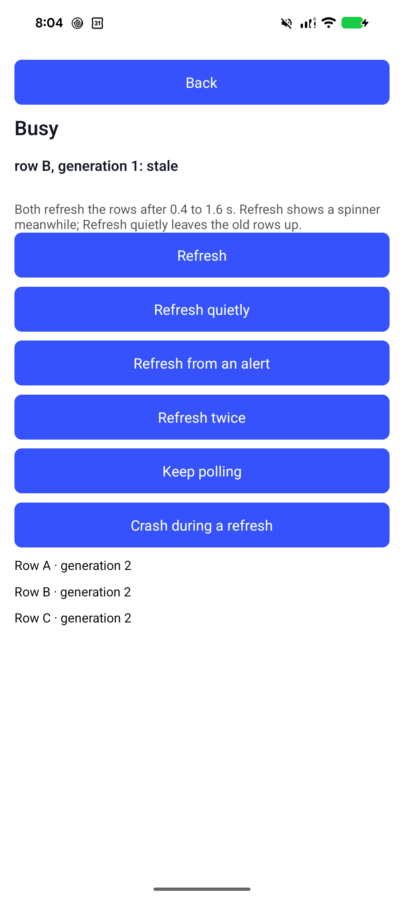

Mobium test report
2026-10-05 20:04:21 · 38.7s
3 passed0 flaky2 failed
A failure keeps a screenshot of the device. On a real phone that is a picture of somebody's screen; run with --no-screenshots to keep none.
failedflaky.test.json › a row tapped after a quiet refresh is current (1)android-phone9.7s
Failed
step 3 (app_wait_for): [timeout] step 3 of 3 (app_wait_for) failed: timed out after 3.204s waiting for testid=busyOutcome to contain ": current" — its text is "row B, generation 1: stale"; steps 1-2 ran before it, and nothing after

The map when it failed
@e1 Back (button) @e2 Refresh (button) @e3 Refresh quietly (button) @e4 Refresh from an alert (button) @e5 Refresh twice (button) @e6 Keep polling (button) @e7 Crash during a refresh (button) @e8 Row A · generation 2 (button) @e9 Row B · generation 2 (button) @e10 Row C · generation 2 (button)
passedflaky.test.json › a row tapped after a quiet refresh is current (2)android-phone6.6s
failedflaky.test.json › a row tapped after a quiet refresh is current (3)android-phone9.7s
Failed
step 3 (app_wait_for): [timeout] step 3 of 3 (app_wait_for) failed: timed out after 3.18s waiting for testid=busyOutcome to contain ": current" — its text is "row B, generation 1: stale"; steps 1-2 ran before it, and nothing after

The map when it failed
@e1 Back (button) @e2 Refresh (button) @e3 Refresh quietly (button) @e4 Refresh from an alert (button) @e5 Refresh twice (button) @e6 Keep polling (button) @e7 Crash during a refresh (button) @e8 Row A · generation 2 (button) @e9 Row B · generation 2 (button) @e10 Row C · generation 2 (button)